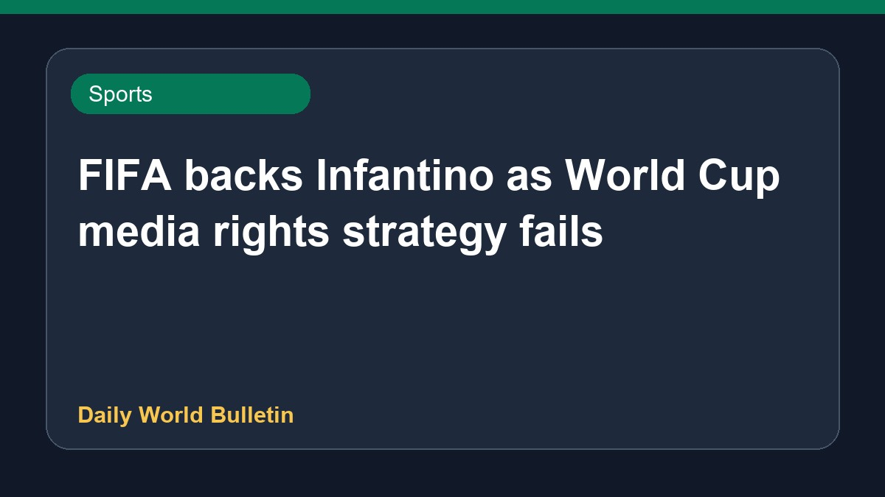

FIFA backs Infantino as World Cup media rights strategy fails

FIFA has stated it will defend President Gianni Infantino after plans regarding World Cup media rights collapsed. Meanwhile, UEFA and its member national associations maintain that the under-pressure president's position remains unchanged, and a potential boycott of FIFA tournaments by European football bodies may still proceed. Discussions are ongoing regarding possible challengers for the upcoming FIFA presidency amid continued tensions between the global governing body and European football officials.
Original source: Sports News Sources
FIFA pledges to defend Infantino after World Cup rights plan collapses - aljazeera.com ↗
FIFA pledges to defend Infantino after World Cup rights plan collapses - aljazeera.com ↗